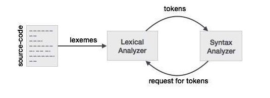
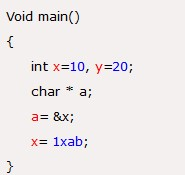

Lexical analysis is the first phase of a compiler. It takes the modified source code from language preprocessors that are written in the form of sentences. The lexical analyzer breaks these syntaxes into a series of tokens, by removing any whitespace or comments in the source code.
If the lexical analyzer finds a token invalid, it generates an error. The lexical analyzer works closely with the syntax analyzer. It reads character streams from the source code, checks for legal tokens, and passes the data to the syntax analyzer when it demands.
Unnecessary parenthesis can be avoided in regular expressions using the following conventions:
A regular definition gives names to certain regular expressions and uses those names in other regular expressions.
Here is a regular definition for the set of Pascal identifiers that is define as the set of strings of letter and digits beginning with a letters.
letter → A | B | . . . | Z | a | b | . . . | z
digit → 0 | 1 | 2 | . . . | 9
id → letter (letter | digit)*
The regular expression id is the pattern for the Pascal identifier token and defines letter and digit.
Where letter is a regular expression for the set of all upper-case and lower case letters in the alphabet and digit is the regular for the set of all decimal digits.
The pattern for the Pascal unsigned token can be specified as follows:
digit → 0 | 1 | 2 | . . . | 9
digit → digit digit*
Optimal-fraction → . digits | ε
Optimal-exponent → (E (+ | - | ) digits) | ε
num → digits optimal-fraction optimal-exponent.
This regular definition says that
During the lexical analysis phase this type of error can be detected.
Lexical error is a sequence of characters that does not match the pattern of any token. Lexical phase error is found during the execution of the program.
Lexical phase error can be:
Example:
In this code, 1xab is neither a number nor an identifier. So this code will show the lexical error.